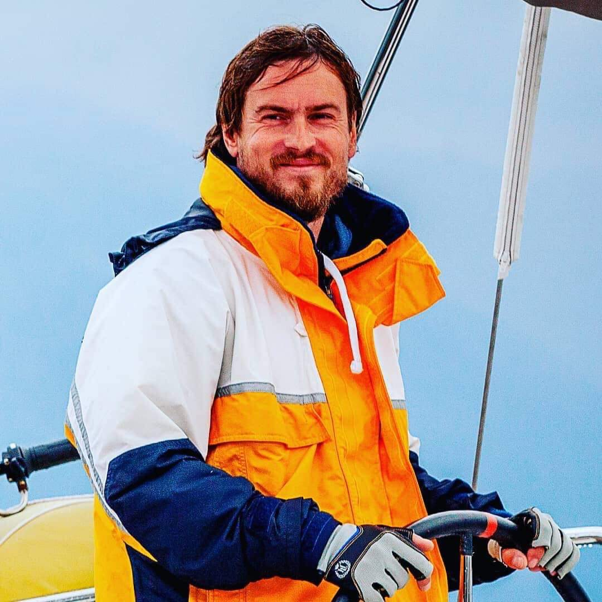

What is included
- Practice with sailing yachts, motor yachts or catamarans.
- Manoeuvring, safety routines, route preparation and crew communication.
- Clear explanation of practical decisions, not only theory.
Service
Training focused on real handling, confidence, safety and the practical decisions a skipper makes on board.

For beginners, owners and future skippers who need structured practical training under the IYT approach.
Training can be organized around Montenegro and nearby Adriatic cruising areas depending on the program.
More confident boat handling, better safety habits and clearer understanding of skipper responsibility.
The request goes to one main form, with this service already selected.